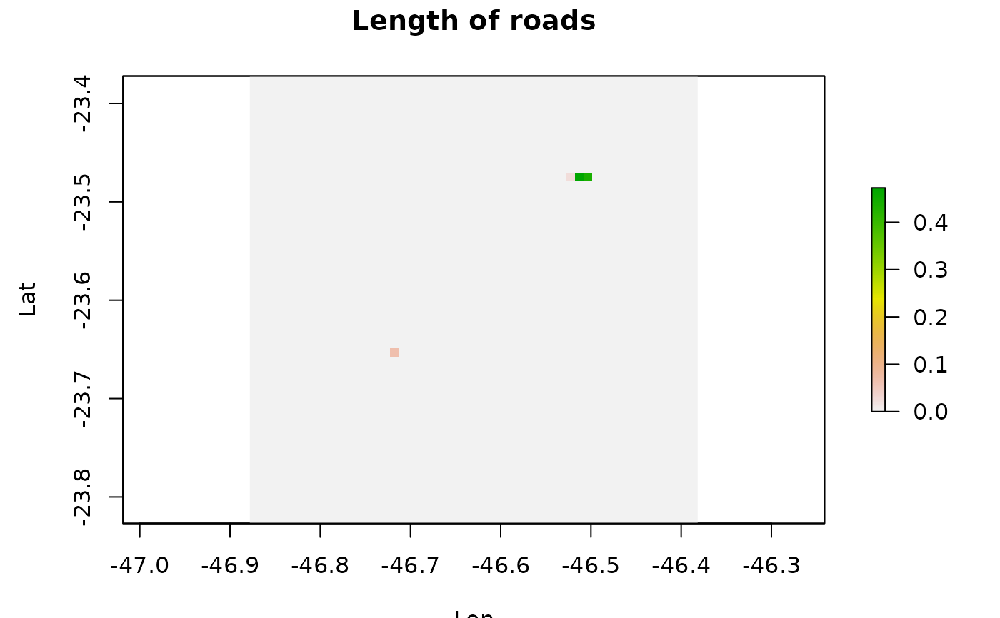

Create a emission distribution from 'sp' or 'sf' spatial lines data.frame or spatial lines.
There 3 modes available to create the emission grid: - using gridInfo function output (defoult) - using the patch to "wrfinput" (output from real.exe) file or "geo" for (output from geog.exe) - "sf" (and "sp") uses a grid in SpatialPolygons format
The variable is the column of the data.frame with contains the variable to be used as emissions, by defoult the idstribution taken into acount the lench distribution of lines into each grid cell and the output is normalized.
Usage
lineSource(
s,
grid,
as_raster = FALSE,
type = "info",
gcol = 100,
grow = 100,
variable = "length",
verbose = TRUE
)Source
OpenstreetMap data avaliable https://www.openstreetmap.org/ and https://download.geofabrik.de/
Arguments
- s
SpatialLinesDataFrame of SpatialLines object
- grid
grid object with the grid information or filename
- as_raster
output format, TRUE for raster, FALSE for matrix
- type
"info" (default), "wrfinput", "geo", "sp" or "sf" for grid type
- gcol
grid points for a "sp" or "sf" type
- grow
grid points for a "sp" or "sf" type
- variable
variable to use, default is line length
- verbose
display additional information
See also
gridInfo and rasterSource
Examples
# \donttest{
# loading a shapefile with osm data for sao paulo metropolitan area
roads <- sf::st_read(paste0(system.file("extdata",package="EmissV"),"/streets.shp"))
#> Reading layer `streets' from data source
#> `/home/runner/work/_temp/Library/EmissV/extdata/streets.shp'
#> using driver `ESRI Shapefile'
#> Simple feature collection with 5216 features and 3 fields
#> Geometry type: LINESTRING
#> Dimension: XY
#> Bounding box: xmin: -46.87612 ymin: -23.8155 xmax: -46.35414 ymax: -23.4179
#> Geodetic CRS: GCS_unknown
d3 <- gridInfo(paste0(system.file("extdata", package = "EmissV"),"/wrfinput_d03"))
#> Grid information from: /home/runner/work/_temp/Library/EmissV/extdata/wrfinput_d03
# calculating only for 2 streets
roadLength <- lineSource(roads[1:2,],d3,as_raster=TRUE)
#> using length as emission variable
#> Number of lat points 51
#> Number of lon points 51
# to generate a quick plot
raster::plot(roadLength,ylab="Lat", xlab="Lon",main="Length of roads")

# lines(road_lines)
# }